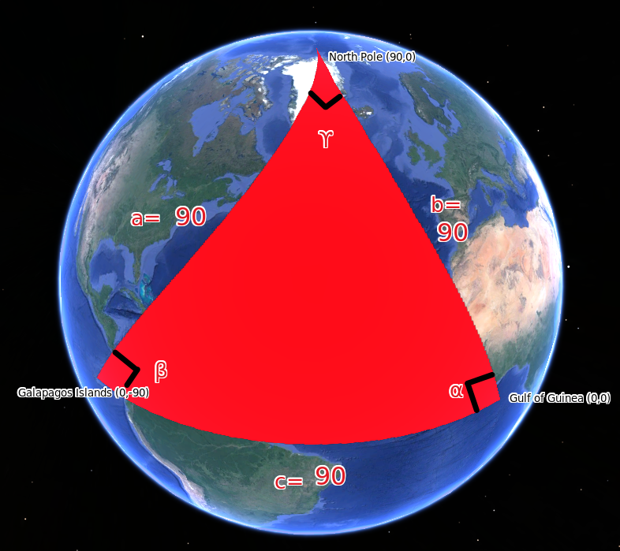
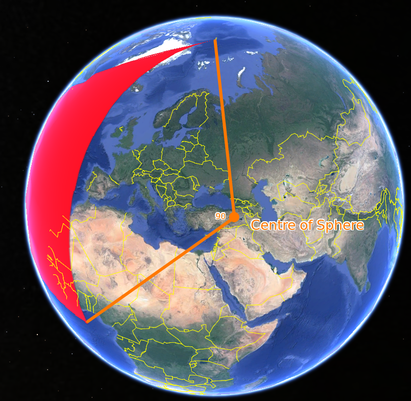
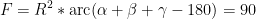
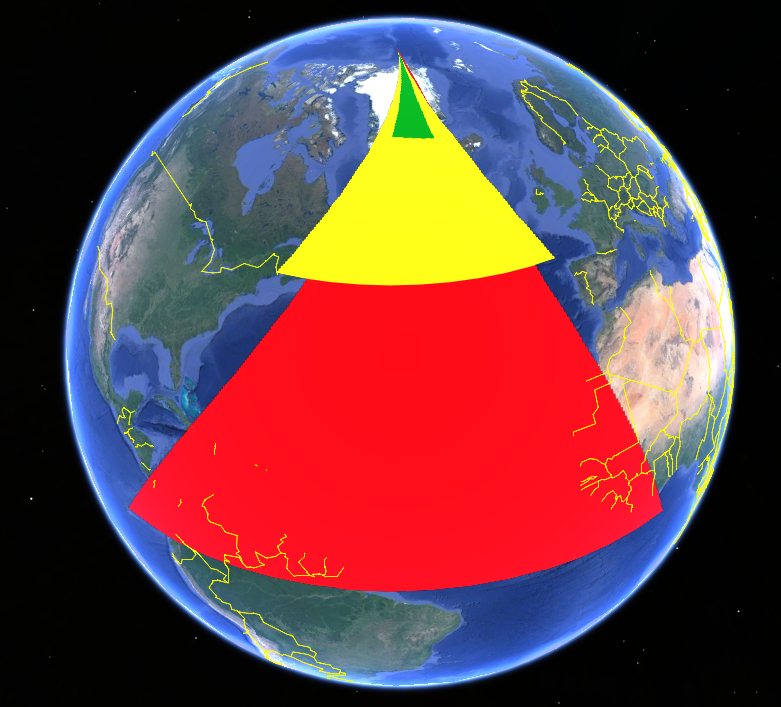

Angles on Spherical Triangles
Created Tuesday 23 November 2021
@GEOGRAPHY @YEAR3 @MAP_PROJECTIONS
Imagine the Earth as a @unisphere (where all the sides have a length of 1)

The lengths of the side of the @spherical_triangle are given by the central angle (from the north pole to equator is 90°)
All angles = 90°


| Colour | Side length | Angles |
|---|---|---|
| Red | 90 | 90 |
| Yellow | 45 | 65 |
| Green | 22.5 | 61 |
Notice how as the spherical triangle gets smaller, the angles get pretty close to a planar triangle (angles=60°)
